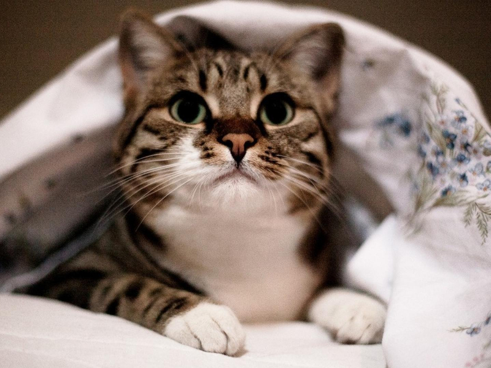

旅游散文|12月20日 12:17
阅读141
小时候，总常常幻想着自己可以长大，可以独自一人去领略更多优美的风光。
我们这一生，会有太多太多的梦想，要么就是用尽全力去实现他，要么就是永远沉积在自己的心中。
我喜欢旅行，向往美丽的山、美丽的水，一见到大海和草原我就会心旷神怡，深陷其中。
我期盼可以带着自己最爱的人去遨游世界，让他给自己拍上几张美美的照片。

我想要开车或者走路去穿过每一个平淡的日子，只需要喜欢的人陪在身边， 不谈什么理想目标，心中只有诗和远方。 生活其实可以如此的平淡如此的美好，只需要有个人来陪着你一起记录。 所以这就是最真实的。可能是缘分吧，我这一生注定过着漂泊的日子。 幼年时期，因为各个方面的原因，我开始了我每天辛苦漂泊的日子，早就厌倦了这种生活。
我以为长大后我会找一份稳定的工作，在一个安静的环境里喝着一口清茶， 读上三两本书，认真的过完这一生。知道我真的成长了起来，才发现这样的生活已经按捺不住我内心的浮躁， 所以我就决定，这就是我再一次踏上征程的时候了。于是，我就背上自己的小包，装着我的期待， 一个人懵懵懂懂的踏上征途，去看看这人人口中精彩的世界，看看远方的太阳是不是更加的明媚。

经历过无数个日日夜夜，白云日落沧海桑田，这两年多的行程中， 我从出生的小草地走到了花海中， 从山涧穿越到了沙漠，从大海游荡到平川。 这一路下来，仿佛自己的心已经变年轻了十岁，但是容颜却逝去。我不敢确定我还会走多远的路，还有走多久。 我很喜欢的一个诗人冰岛就写过这样的诗：那时我们有梦,关于文学，关于爱情,关于穿越世界的旅行。
其实对我来说我对于这样旅行的意义并不在于什么爱情或者那么文艺。 但是这给了我很大的关于笔尖上的灵感，也更加离不开了爱情的滋润。 一个人或许听起来很孤单，但是却勉强算是圆梦了。却又好像不那么全面，因为这当中没有了我年少时候的期待， 更加的是一种心灵上的慰藉，因为放不下一个人，所以选择旅行；因为想释放自己的压力，所以才这样选择。

我心中最圣洁的那一座殿堂，也是我最向往的地方——云南。 因为这里古朴、纯真且神秘，满载着许多我童年时期的梦想。 因为那里有梦境天堂一般的大理、有最原始的热带雨林、还有香格里拉这样的地方，浪漫的丽江古镇。 为什么诗人大多吟唱江南，那里是梦中才会有的世界，是如烟如雾的通话天堂，能够揭开我心中的面纱。 我想，在有生之年，一定要带上自己最爱的人来一次这里，拥有一段共同的美好回忆，多么美妙不可言喻。
所以我暗自想这个地方我一定要和对象去，所以我选择了奔赴祖国的南方，去看看大海。 我喜欢小渔村、喜欢日出打鱼的生活，晚上看看大海正上方的星空，数着无数散落的星星，听听海的声音。 可能喜欢上蓝色就是那一瞬间的事情，因为他优雅平淡，让我心里面感到格外的安心。
当我真的站在大海面前的那一刻，我全身心都舒缓了起来，剩下的只有尽情的享受。 这是一个霓虹灯到处泛滥的城市，街上的人群熙熙攘攘，在所有的压力无法释放的时候，就去到海的怀抱里。 这种感觉希望我不在陌生，一个人的旅行其实也很美好，是一种孤寂的美。 我希望在秋冬这个浪漫的季节，我能够带上男友，下一站的目的地就是我最向往的。